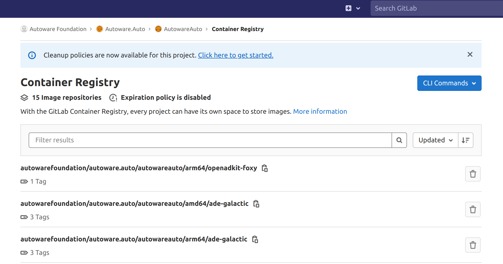
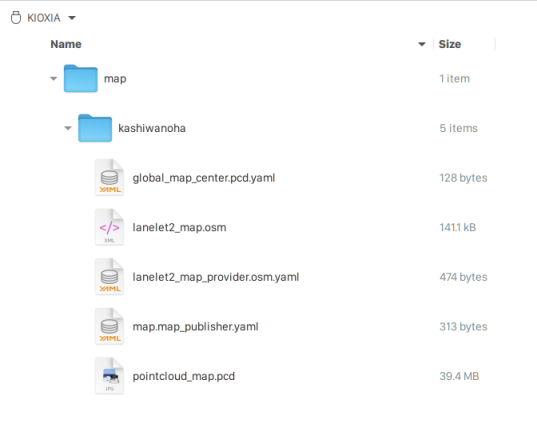

System Setup on AVA platform#
Overview#
This instruction explains how to perform system setup for test execution on AVA platform.
You need to copy docker images and necessary files.
Access to AVA platform via SSH#
ssh root@IP-ADDRESS
For example;
ssh root@192.168.10.27
Copy Autoware.Auto image to AVA platform#
The docker image of Autoware.Auto is registered in GitLab Container Registry. 
-
Copy docker image to AVA platform.
docker pull registry.gitlab.com/autowarefoundation/autoware.auto/autowareauto/arm64/openadkit-foxy:latest
Copy necessary files to USB drive#
-
Copy files related to map contents.
Files are placed in the directory :file_folder:docs/Appendix/Open-AD-Kit-Start-Guide/map
- :page_facing_up:lanelet2_map.osm
- :page_facing_up:pointcloud_map.pcd
- :page_facing_up:global_map_center.pcd.yaml
- :page_facing_up:lanelet2_map_provider.osm.yaml
- :page_facing_up:map_publisher.param.yaml
Copy files to your USB drive as the following directory structure.

-
Copy configuration file of Cyclone DDS.
In this test, we are using Cyclone DDS, so you also need to copy configuration file of Cyclone DDS.
File is placed in the directory :file_folder:docs/Appendix/Open-AD-Kit-Start-Guide/cyclonedds
- :page_facing_up:cyclonedds.xml
Copy the file to your USB drive as the following directory structure.

-
Copy kernel configuration file for tuning kernel parameters.
We have to reconfigure kernel parameters by using
sysctlfor system stability.File is placed in the directory :file_folder:docs/Appendix/Open-AD-Kit-Start-Guide/sysctl.d
- :page_facing_up:60_cyclonedds.conf
Copy the file to your USB root.
Copy files from USB drive to AVA platform#
-
Plug your USB drive into AVA platform and copy files
-
Find USB device name.
lsblk NAME MAJ:MIN RM SIZE RO TYPE MOUNTPOINT sda 8:16 1 28.9G 0 disk `-sda1 8:17 1 28.9G 0 part nvme0n1 259:0 0 119.2G 0 disk |-nvme0n1p1 259:1 0 256M 0 part |-nvme0n1p2 259:2 0 118G 0 part / `-nvme0n1p3 259:3 0 1G 0 part -
Mount USB driver and copy directory.
mkdir -p /mnt/usb mount /dev/sda1 /mnt/usb cp -r /mnt/usb/* ~/ -
Move kernel configuration file to
/etc/sysctl.d.mv ~/60_cyclonedds.conf /etc/sysctl.d -
Update kernel parameters.
sysctl -p /etc/sysctl.d/60_cyclonedds.conf
-
Modify cyclonedds.xml#
You need to change the element NetworkInterfaceAddress to the network interface currently in use.
-
Find network interface.
ip addr 1: lo: <LOOPBACK,UP,LOWER_UP> mtu 65536 qdisc noqueue state UNKNOWN group default qlen 1000 link/loopback 00:00:00:00:00:00 brd 00:00:00:00:00:00 inet 127.0.0.1/8 scope host lo valid_lft forever preferred_lft forever inet6 ::1/128 scope host valid_lft forever preferred_lft forever 2: enP4p4s0: <BROADCAST,MULTICAST,UP,LOWER_UP> mtu 1500 qdisc mq state UP group default qlen 1000 link/ether 00:11:22:33:44:55 brd ff:ff:ff:ff:ff:ff inet 192.168.10.27/24 brd 192.168.10.255 scope global dynamic enP4p4s0 valid_lft 332sec preferred_lft 332sec inet 192.168.10.13/24 brd 192.168.10.255 scope global secondary dynamic noprefixroute enP4p4s0 valid_lft 337sec preferred_lft 262sec inet6 fe80::34c:b6f7:b356:b7/64 scope link valid_lft forever preferred_lft forever inet6 fe80::230:64ff:fe1a:a65/64 scope link valid_lft forever preferred_lft forever 3: docker0: <NO-CARRIER,BROADCAST,MULTICAST,UP> mtu 1500 qdisc noqueue state DOWN group default link/ether aa:bb:cc:dd:ee:ff brd ff:ff:ff:ff:ff:ff inet 172.17.0.1/16 brd 172.17.255.255 scope global docker0 valid_lft forever preferred_lft forever:speech_balloon: You can find a network interface such as
enP4p4s0. -
Change the
NetworkInterfaceAddress.vi ~/cyclonedds/cyclonedds.xmlFor example; :page_facing_up: cyclonedds.xml
<General> - <NetworkInterfaceAddress>lo</NetworkInterfaceAddress> + <NetworkInterfaceAddress>enP4p4s0</NetworkInterfaceAddress> </General>